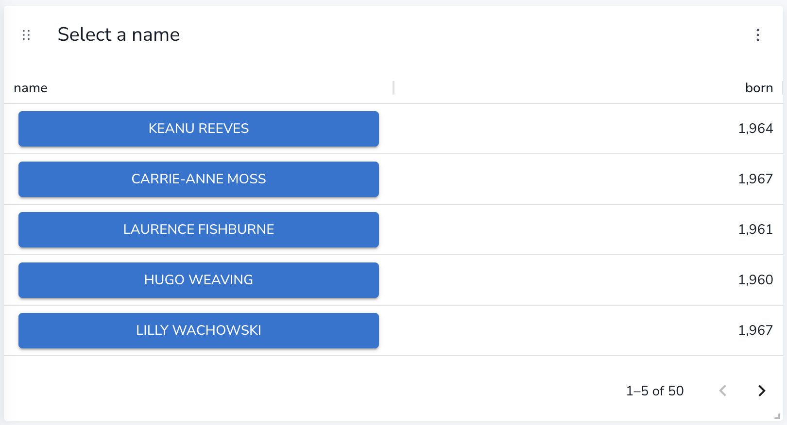
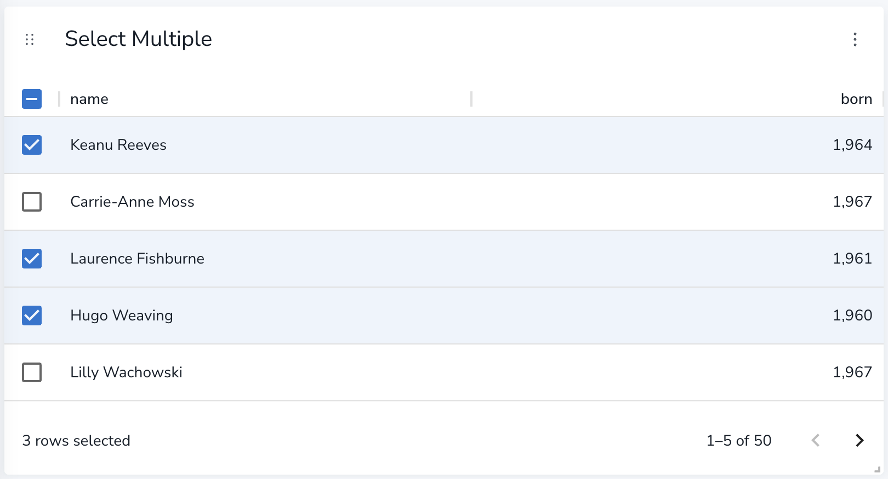

Table
|
This documentation pertains to the (legacy) unsupported version of NeoDash. For users of the supported NeoDash offering, refer to NeoDash commercial. |
The most common report in a dashboard is often a simple table view. NeoDash contains a powerful table component that can render all the data returned by a Cypher query. This includes simple data like numbers or text, but also Neo4j native data like nodes, relationships, and paths.
The table report supports the following additional features:
-
automatic pagination of results.
-
Sorting/filtering by clicking on the table headers.
-
Prefixing a column header with __ (double underscore) will make the column hidden
-
Downloading your data as a CSV file.
Double-clicking on a table cell will copy that cell’s value to the user’s clipboard.
Advanced Settings
| Name | Type | Default Value | Description |
|---|---|---|---|
Transpose Rows & Columns |
on/off |
off |
when activated, transposes the rows and columns of the table. This means that each of the returned rows from Neo4j will be shown as a column instead of a row. |
Compact Table |
on/off |
off |
When activated, makes the rows half height and increase the number of rows per page accordingly. |
Relative Column Sizes |
List of numbers |
[1, 1, 1, …] |
The relative width between each of the columns in the table. For example, if the first column should be twice the width of the 2nd and 3rd, this will be set to ``[2, 1, 1]''. |
Enable CSV Download |
on/off |
off |
when activated, displays a button on the bottom right of the table footer. This button lets the user download the complete set of table results (all pages) as a CSV file. |
Override no data message |
Text |
Query returned no data. |
Override the message displayed to the user when their query returns no data. |
Auto-run query |
on/off |
on |
when activated automatically runs the query when the report is displayed. When set to `off', the query is displayed and will need to be executed manually. |
Report Description |
markdown text |
When specified, adds another button the report header that opens a pop-up. This pop-up contains the rendered markdown from this setting. |
Rule-Based Styling
Using the Rule-Based Styling menu, the following style rules can be applied to the table:
-
The background color of an entire row in a table.
-
The text color of an entire row in a table.
-
The background color of a single cell in the table.
-
The text color of a single cell in the table.
If a column is hidden (header prefixed with __ double underscore), it can still be used as an entry point for a styling rule.
Report Actions
With the Report Actions extension, tables can be turned into interactive components that set parameters. Two flavours of report actions for tables exist:
1. Select a value from a row
Adding a Cell Click action to a table column, turns the values in that row into clickable buttons. When the user clicks on the button, a predefined parameter is set to one of the columns in that row.

2. Select multiple from a row
Adding a Row Clicked action to a table prepends each row with a checkbox. The user can then check one or more boxes to update a dashboard parameter.
Keep in mind that regardless if one or more values are selected, the type of the dashboard parameter is a list of values. The queries using the parameter must ensure that the list type is handled correctly.
